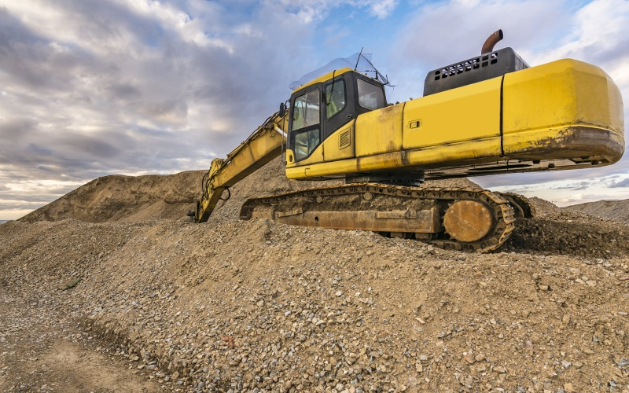

Vente de sable de haute qualité
Chez DANDJIN DREDGING DEPTH & CONSTRUCTION LTD, nous proposons un sable fin, purifié et de haute qualité, spécialement conçu pour répondre aux besoins des projets de construction, de bétonnage et d'autres applications industrielles. Notre sable est extrait des lagunes et de zones maritimes de manière responsable et durable, respectant les normes environnementales les plus strictes pour assurer une qualité optimale tout en préservant l'écosystème.
Le processus de purification de notre sable est rigoureux : nous le trions, le lavons et l’affinons pour garantir un produit final d'une pureté exceptionnelle. Ce sable est parfait pour une variété d'utilisations, telles que la construction de routes, de bâtiments, de fondations solides, ainsi que pour la fabrication de béton haute performance. Notre engagement envers la qualité et la satisfaction client est au cœur de notre processus de production.
Nous comprenons que chaque projet a des exigences spécifiques, et c’est pourquoi nous proposons des solutions de vente de sable personnalisées, adaptées à vos besoins. Que vous ayez besoin de grandes quantités pour des projets d’infrastructure à grande échelle ou de petites quantités pour des travaux résidentiels, nous sommes en mesure d’assurer une fourniture continue et rapide, tout en respectant vos délais.
Grâce à notre infrastructure logistique bien établie, nous pouvons livrer du sable partout dans la région, avec un temps de réponse rapide. Nos camions et équipements de transport sont capables de gérer des volumes importants, garantissant ainsi une livraison rapide et sécurisée, même dans les zones les plus difficiles d'accès.
En plus de la vente de sable, nous offrons un service d'accompagnement et de conseil technique pour vous aider à déterminer la quantité exacte de sable nécessaire à votre projet, ainsi que les spécifications techniques les mieux adaptées. Notre équipe est à votre disposition pour répondre à toutes vos questions et vous guider dans le choix des matériaux les plus appropriés.
La qualité de notre sable est attestée par des tests de granulométrie et d'autres analyses qui garantissent une conformité parfaite avec les standards de l'industrie de la construction. Nous nous engageons à offrir à nos clients un sable qui respecte non seulement les spécifications techniques, mais également les normes environnementales et sanitaires en vigueur.
Pour chaque livraison, nous vous fournissons un certificat de conformité, assurant ainsi la traçabilité de nos produits et leur qualité optimale. Nous sommes fiers de contribuer au succès de vos projets grâce à des matériaux fiables et durables.
Que vous soyez un entrepreneur, un promoteur immobilier ou une entreprise de construction, notre équipe est prête à répondre à vos besoins en matière de vente de sable. Nous vous offrons des prix compétitifs et des conditions de paiement flexibles pour faciliter vos achats.
Si vous avez des questions ou si vous souhaitez obtenir un devis personnalisé pour votre projet, n’hésitez pas à nous contacter. Nous sommes là pour vous fournir les meilleurs matériaux pour la réussite de vos projets de construction.